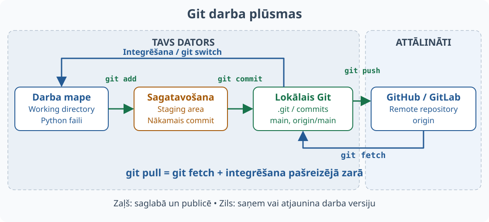
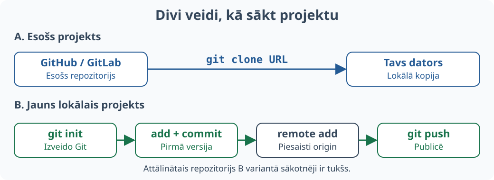
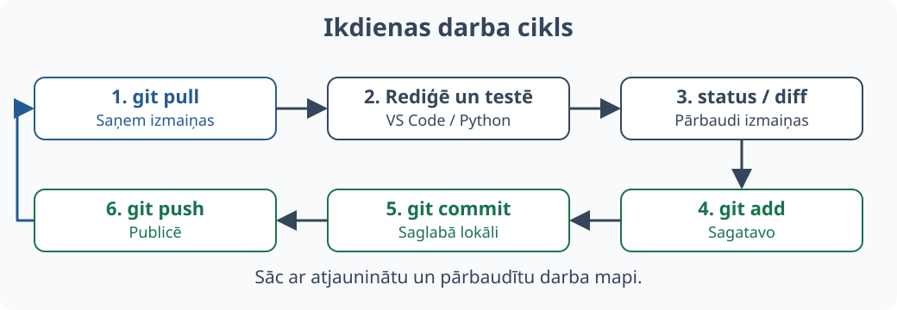
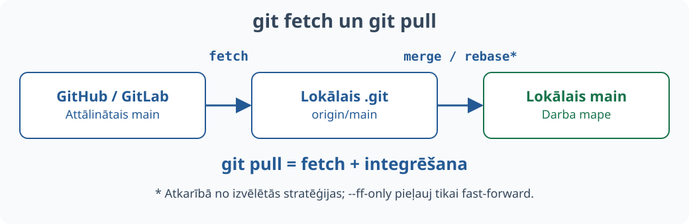
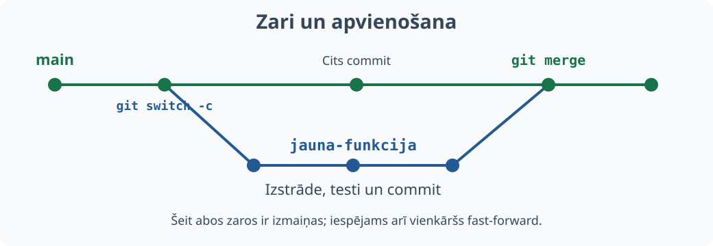
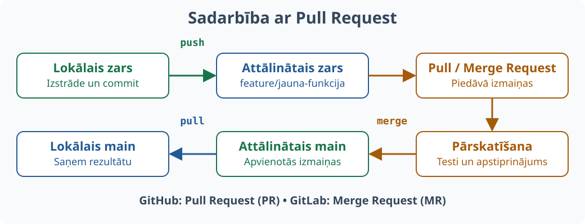

Git un GitHub ar Visual Studio Code
Iemācies vienreiz lejupielādēt kursa repozitoriju un pēc tam saņemt jaunos Python piemērus un uzdevumus, nepārlādējot ZIP arhīvu katru reizi.
Pull. GitHub konts šim nolūkam nav vajadzīgs. Ja izmanto iepriekšējā ceļvedī aprakstīto Download ZIP, vari turpināt arī bez Git.1. Kas ir Git un GitHub?
Git ir versiju vadības sistēma, kas saglabā failu izmaiņu vēsturi. GitHub ir tīmekļa pakalpojums, kurā var glabāt Git repozitorijus un sadarboties ar citiem. VS Code ir redaktors ar iebūvētu Git saskarni; pats Git datorā parasti jāinstalē atsevišķi.
Git darba plūsmas: četras zonas


Faila saglabāšana ar Ctrl+S nav commit. git add sagatavo tieši izvēlēto faila versiju, git commit ieraksta to lokāli, bet git push nosūta commit uz serveri. Lokālam darbam internets un GitHub konts nav nepieciešami.
GitHub nav pats Git: alternatīvas ir GitLab, Bitbucket un Codeberg. Git komandas darbojas arī ar citiem Git serveriem.


Skatīt visas tipiskās Git darba plūsmas un komandu piemērus ↓.
| Termins | Nozīme |
|---|---|
repository | Mape ar projekta failiem un Git izmaiņu vēsturi. |
clone | Izveido lokālu repozitorija kopiju (pirmajā reizē). |
pull | Lejupielādē un integrē izmaiņas no attālinātā repozitorija. |
commit | Saglabā savu izmaiņu ierakstu lokālajā vēsturē. |
push | Nosūta lokālos commit ierakstus uz attālināto repozitoriju, ja ir tiesības. |
Atšķirībā no ZIP lejupielādes Git saglabā arī informāciju par to, no kurienes nācis repozitorijs un kādi atjauninājumi jau saņemti.
2. Git instalēšana
Windows 10/11 — galvenā instrukcija
- Atver oficiālo Git for Windows lejupielādes lapu un lejupielādē instalētāju.
- Palaid instalētāju. Iesācējiem der lielākā daļa noklusējuma iestatījumu. Ja redzi izvēli, atstāj Git pieejamu komandrindā un citām programmām (Git from the command line and also from 3rd-party software).
- Saglabā Git Credential Manager, ja tas tiek piedāvāts; tas noderēs GitHub autentifikācijai vēlāk.
- Pēc instalācijas aizver un atkārtoti atver VS Code (vai vismaz jaunu termināli).
- VS Code izvēlies Terminal → New Terminal un pārbaudi komandu:
git --versionPiemēra rezultāts: git version 2.x.y.windows.z. Versijas cipari var atšķirties.
Alternatīva pieredzējušiem: winget
Ja Windows Package Manager jau darbojas, Git var instalēt arī no PowerShell:
winget install --id Git.Git -e --source wingetPēc tam atver jaunu termināli un pārbaudi git --version.
Ja lieto darba vai mācību datoru ar instalācijas ierobežojumiem, sazinies ar administratoru; alternatīva ir ZIP lejupielāde.
3. Klonē kursa repozitoriju VS Code
Klonēšana jāveic tikai vienreiz. Kursa repozitorijs ir publisks, tāpēc GitHub konts vai pierakstīšanās nav nepieciešama.
- Atver Python_RTU_2026_27 GitHub lapu. Poga Code rāda HTTPS adresi.
- VS Code atver View → Command Palette ar Ctrl+Shift+P (macOS Cmd+Shift+P).
- Ieraksti un izvēlies Git: Clone (vai Source Control skatā Clone Repository).
- Ielīmē šo adresi un apstiprini:
https://github.com/ValRCS/Python_RTU_2026_27.git- Izvēlies vecākmapi, piemēram,
Documents, kur veidot jauno kursa mapi. Nav iepriekš jāizveido vēl viena mape ar to pašu nosaukumu. - Kad klonēšana beigusies, izvēlies Open vai Open in New Window.
- Ja VS Code jautā par mapes uzticamību (Workspace Trust), apstiprini tikai tad, ja tā tiešām ir šī kursa repozitorija mape.
Kreisajā Explorer panelī atrodi lessons/01_getting_started/hello.py. VS Code Python paplašinājums un Python 3 ir aprakstīti 1. nodarbības uzstādīšanas ceļvedī.
4. Saņem jaunākos kursa materiālus
Ja pasniedzējs GitHub pievienojis uzdevumus, piemērus vai labojumus, nav vēlreiz jāklonē repozitorijs. Atver esošo kursa mapi VS Code un:
- Atver Source Control (zarošanās ikona kreisajā malā; Windows Ctrl+Shift+G).
- Atver skata … izvēlni un izvēlies Pull. Alternatīvi Command Palette meklē Git: Pull.
- Pēc operācijas pārbaudi, vai Explorer redzami jaunākie faili.
Pull saņem izmaiņas no attālinātā repozitorija. Sync Changes var veikt gan Pull, gan Push — šim uzdevumam pietiek ar Pull.
Ļoti svarīgi: ja esi izmainījis kādu kursa oriģinālo failu, Pull var apstāties, lai nepārrakstītu tavas izmaiņas. Drošāk ir savus uzdevumus turēt atsevišķā mapē:
Documents/
├── Python_RTU_2026_27/ ← pasniedzēja materiāli
└── Mani_Python_uzdevumi/ ← mani .py failiVingrinājumus var atvērt ar File → Open Folder citā VS Code logā. Nekad neizpildi nepārbaudītu git reset --hard kā universālu labošanas paņēmienu — tas var neatgriezeniski izdzēst tavas lokālās izmaiņas.
5. Tās pašas darbības terminālī
Komandrinda nav obligāta, tomēr dažas Git komandas palīdz saprast, ko dara VS Code. Atver Terminal → New Terminal.
Pirmajā reizē (vecākmapē, piemēram, Documents)
git clone https://github.com/ValRCS/Python_RTU_2026_27.git
cd Python_RTU_2026_27Nākamajās reizēs (atvērtā kursa mapē)
git status
git pull --ff-onlygit status parāda, vai lokālajā mapē ir izmaiņas. git pull --ff-only atjaunina tikai tad, ja iespējama vienkārša vēstures pārvietošana uz priekšu; tas neveido automātisku merge commit. Parasts git pull arī darbojas vienkāršā, nemainītā kursa klonā.
Ko vēl var pārbaudīt?
Komanda git remote -v parāda piesaistītā attālinātā repozitorija adresi. Parasti tā nosaukums ir origin.
git remote -v6. Praktiskais uzdevums un pašpārbaude
Šim vingrinājumam pietiek ar publiskā kursa repozitorija lasīšanu. GitHub konts nav nepieciešams.
- Pārbaudi
git --version. - Izmanto Git: Clone kursa repozitorijam un atver to VS Code.
- Atrodi un palaid
lessons/01_getting_started/hello.pyar Run Python File (iepriekš jābūt instalētam Python). - Atver Source Control → … → Pull vai izpildi
git pull --ff-only. - Izveido atsevišķu mapi
Mani_Python_uzdevumiun tajā savumans_sveiciens.py.
Uzdevums izpildīts, ja kursa failus vari atvērt un atjauninājumu pārbaude izdodas bez konflikta.
7. Bonuss: izveido GitHub kontu
Ja vēlies saglabāt un publicēt savus projektus vai sadarboties ar citiem, izveido bezmaksas kontu vietnē github.com/signup. Izvēlies lietotājvārdu, reģistrē e-pastu un izpildi GitHub konta verifikācijas norādes; ieslēdz divfaktoru autentifikāciju.
GitHub konts nedod automātiskas tiesības labot pasniedzēja repozitoriju. Publisku repozitoriju var klonēt bez konta, bet publicēšanai ir vajadzīga autentifikācija un atbilstošas tiesības.
Kas ir fork un pull request?
Fork ir cita repozitorija kopija tavā GitHub kontā. Pull request ir priekšlikums šīs kopijas izmaiņas pievienot sākotnējam projektam. To var apgūt vēlāk; tas nav vajadzīgs kursa materiālu lejupielādei. GitHub skaidrojums par fork.
8. Bonuss: konfigurē Git vārdu un e-pastu
Kad pats veidosi commit, Git šim ierakstam pievienos autora vārdu un e-pasta adresi. Terminālī aizstāj paraugus ar saviem datiem:
git config --global user.name "Anna Berzina"
git config --global user.email "anna@example.com"Pārbaudi konfigurāciju:
git config --global user.name
git config --global user.email--global iestata vērtības šī datora lietotāja kontam. Konkrētam repozitorijam tās var atšķirties. Git autora vārds nav tas pats, kas GitHub lietotājvārds, un šīs komandas nepieraksta tevi GitHub.
Ja nevēlies publiskā Git vēsturē norādīt savu privāto e-pasta adresi, GitHub konta iestatījumos vari izmantot kontam piešķirto noreply adresi. Lai commit ierakstus saistītu ar GitHub kontu, konfigurētajam e-pastam jābūt atbilstoši piesaistītam kontam. Skati GitHub e-pasta iestatīšanas pamācību.
9. Bonuss: pirmā izmaiņa savā repozitorijā
Šo vingrinājumu izpildi savā GitHub repozitorijā (vai projektā, kurā tev ir rakstīšanas tiesības), nevis kursa materiālu repozitorijā.
- GitHub izvēlies New repository, izveido, piemēram,
mani-python-darbiun pievienoREADMEfailu. - Klonē savu repozitoriju VS Code ar Git: Clone.
- Izveido failu
mans_sveiciens.py, saglabā to. - Source Control skatā pie faila nospied + (Stage Changes), ievadi commit ziņu, piemēram,
Add first Python exercise, un izvēlies Commit. - Izvēlies Push (dažkārt Publish Branch) un pārbaudi failu GitHub tīmekļa lapā.
Termināļa ekvivalents pēc faila saglabāšanas:
git status
git add mans_sveiciens.py
git commit -m "Add first Python exercise"
git pushPirmajā Push reizē VS Code vai Git Credential Manager var atvērt pārlūku, lai tu apstiprinātu GitHub autentifikāciju. GitHub konta parastā parole nav jāievada kā Git HTTPS parole. Neievieto piekļuves tokenus Python failos vai repozitorijā.
commit saglabā izmaiņas lokāli, bet push tās nosūta attālināti. Publisks repozitorijs nenozīmē publiskas rakstīšanas tiesības.10. Bonuss: tipiskās Git darba plūsmas
Šie piemēri paredzēti patstāvīgam darbam savā repozitorijā. Kursa oriģinālajā repozitorijā izmanto tikai klonēšanu un atjaunināšanu, ja vien pasniedzējs nav piešķīris rakstīšanas tiesības. Pirms commit konfigurē savu Git identitāti.
A. Esošs projekts: klonē vienreiz
git clone https://github.com/ValRCS/Python_RTU_2026_27.git
cd Python_RTU_2026_27
git status
git pull --ff-onlyJa klons jau pastāv, neklonē vēlreiz: atver esošo mapi un izpildi git status un git pull --ff-only.
B. Ikdienas darba cikls


Sāc savā repozitorijā ar tīru darba mapi un zaru, kam jau konfigurēts upstream. Starp pirmo un otro komandu bloku izmaini un saglabā main.py, pēc tam palaid programmu un pārbaudi rezultātu.
git status
git pull --ff-onlygit status
git diff
git add main.py
git diff --staged
git commit -m "Pievienota jauna funkcija"
git pushJa pull --ff-only neizdodas, apstājies un pārbaudi vēsturi. Neizdzēs lokālās izmaiņas. Ja push tiek noraidīts, iespējams, attālinātajā zarā pa šo laiku parādījies jauns commit.
C. Jauns lokālais projekts un publicēšana
mkdir mans_python_projekts
cd mans_python_projekts
git init -b mainAtver šo mapi VS Code, izveido main.py ar print("Sveiki, Python!"), saglabā un palaid programmu. Tad:
git status
git add main.py
git commit -m "Pirmā Python programma"
git log --onelineAr to pietiek lokālai versiju vadībai. Ja vēlies publicēt, izveido tukšu GitHub repozitoriju (bez README, licences vai .gitignore), nokopē tā HTTPS adresi un aizstāj USERNAME ar savu lietotājvārdu.
git remote add origin https://github.com/USERNAME/mans-python-projekts.git
git remote -v
git push -u origin main-u piesaista lokālo zaru tā attālinātajam upstream. Turpmāk parasti pietiek ar git push un git pull. Alternatīva: vispirms izveidot projektu GitHub un tad klonēt.
D. Saņem izmaiņas: fetch vai pull?


Piemērs savā klonā ar zaru main un attālināto origin/main. Pārbaudi darba mapes stāvokli pirms integrēšanas.
git status
git fetch origin
git log --oneline main..origin/main
git diff main..origin/mainJa esi zarā main, darba mape ir tīra un vēlies integrēt tikai ar fast-forward:
git merge --ff-only origin/mainŠis fetch un merge pāris atbilst git pull --ff-only origin main. Parasts pull var izmantot arī merge vai rebase atkarībā no konfigurācijas.
E. Zari: izstrādā jaunu funkciju atsevišķi


Sāc savā repozitorijā ar tīru darba mapi un esošu main zaru.
git switch main
git switch -c jauna-funkcijaIzmaini main.py, pārbaudi programmu un saglabā izmaiņas:
git add main.py
git commit -m "Pievienota jauna funkcija"Ja strādā viens un vēlies apvienot lokāli:
git switch main
git merge jauna-funkcija
git log --oneline --graph --allJa rodas konflikts, apskati git status, izlabo konfliktējošos failus, pārbaudi programmu un sagatavo labojumus ar git add. Merge konflikta gadījumā pabeidz ar git commit vai, ja vēlies atteikties no iesāktā merge, izmanto git merge --abort. Neizmanto piespiedu reset.
F. Sadarbība: Pull Request / Merge Request


Alternatīva E varianta lokālajam merge: publicē funkcijas zaru repozitorijā, kurā tev ir rakstīšanas tiesības. Ja tā jau ir apvienota lokāli, izmēģini šo ar citu jaunu zaru.
git switch jauna-funkcija
git push -u origin jauna-funkcijaGitHub tīmekļa saskarnē atver Pull Request uz main. Pārskati izmaiņas, sagaidi nepieciešamos testus un apstiprinājumus, tad apvieno. Pēc apvienošanas atjaunini lokālo main:
git switch main
git pull --ff-onlyJa nav rakstīšanas tiesību sākotnējā projektā, vari izveidot fork savā kontā un piedāvāt izmaiņas no tā. Publiska lasīšana nenozīmē tiesības rakstīt. Skati GitHub Flow.
Komandas, kas palīdz pārbaudīt stāvokli
| Komanda | Ko tā parāda? |
|---|---|
git status | Darba mapes un index stāvokli |
git diff | Nesagatavotās izmaiņas izsekotajos failos |
git diff --staged | Sagatavotās izmaiņas nākamajam commit |
git log --oneline --graph --all | Commit vēsturi un zarus |
git branch -a | Lokālos zarus un attālināti izsekotās atsauces |
git remote -v | Attālināto repozitoriju adreses |
Patstāvīgs izaicinājums: trīs commit un viens zars
Izveido jaunu lokālu Python projektu, saglabā sākuma versiju, pievieno lietotāja ievadi un pēc tam izveido funkcijas zaru. Pievieno funkciju, pārbaudi programmu, izveido commit un apvieno zarus. Ar git log --oneline --graph --all pārbaudi vēsturi. GitHub publicēšana ir izvēles uzdevums.
11. Ja kaut kas nedarbojas
| Situācija | Ko pārbaudīt? |
|---|---|
git nav atpazīts | Aizver un atver VS Code; pārbaudi instalāciju un Git pieejamību sistēmas PATH. |
| Source Control nerāda Git | Atver klonēto mapi, nevis vienu failu. Pārbaudi git --version. |
not a git repository | Terminālis atrodas ārpus klonētās mapes vai esi izmantojis ZIP. Atver pareizo projekta mapi. |
Already up to date. | Atjauninājumu nav; viss darbojas. |
| Pull nevar pabeigt lokālu izmaiņu dēļ | Neizdzēs izmaiņas. Saglabā savu darbu un meklē palīdzību pirms merge, stash vai reset. |
fatal: Not possible to fast-forward | Lokālā un attālinātā vēsture atšķiras; --ff-only to droši aptur. Nepiespied pārrakstīšanu. |
Push rāda 403 vai permission denied | Pārbaudi, vai raksti savā repozitorijā vai tev piešķirtas tiesības. Publisku projektu var lasīt bez tiesībām to labot. |
| GitHub prasa autentifikāciju | Publiska kursa klonēšanai tai parasti nevajadzētu būt vajadzīgai. Privātiem repozitorijiem un Push izmanto VS Code pārlūka pierakstīšanos vai Git Credential Manager. |
12. Oficiālās atsauces
Atvērt dokumentāciju (Git, VS Code, GitHub)
Ceļvedis sagatavots 2026. gada novembrī. Rīku izvēļņu nosaukumi un instalētāja izskats dažādās versijās var nedaudz atšķirties.